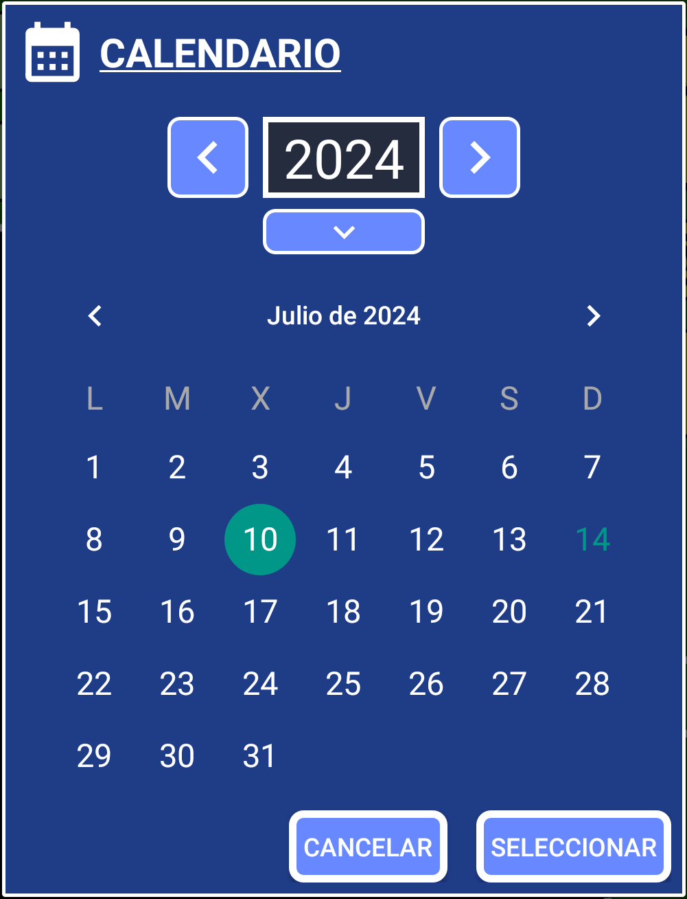

Vamos a crear una alarma/recordatorio simple para algo que necesitamos hacer en el futuro.
1. Abre SECURElogBook y ve a la ventana principal, con fondo azul:

2. Presiona el botón (I) para agregar un nuevo registro/tarea.
3. Una vez que se abra la ventana del creador (fondo verde), podremos crear nuestro registro/tarea:

La pequeña lista con todos los registros (K) mostrará solo los registros que coincidan o sigan al momento seleccionado por hora y fecha (D y F).
4. Por defecto, la hora del registro se establece en el presente y la tarea se establece como no completada. Esa es la razón por la cual los botones del registro (H, I, J) son amarillos.
Al crear un registro es útil tener la hora actual configurada como la hora de nuestro registro por defecto. Observe que la hora del teléfono es la misma que la de nuestro registro, 21:19. Gracias a esto podremos sumar o restar tiempo fácilmente al utilizar el botón para abrir las ventanas de ayuda para gestionar el tiempo:

5. Agrega el texto dentro del cuadro de texto. Si guardas un registro/tarea sin texto, el programa agregará "SIN TEXTO" por defecto.
6. Configura la hora. En SECURElogBook puedes agregar la hora manualmente o usando ventanas. Los casillas de texto (D) se usan para introducir la hora (izquierda) y los minutos (derecha). Si deseas usar las ventanas:
Presiona el botón (E) para agregar valores de tiempo fijos:

Puedes personalizar los valores a la izquierda si presionas el botón de lápiz en la parte superior derecha.
Cada vez que presionas un botón en la columna izquierda, se sumará el valor.
Los botones en la columna derecha no sumarán tiempo cada vez que los presiones.
Mantén presionado el botón (E) para agregar valores no fijos:

Esta ventana permitirá agregar cualquier valor de tiempo, incluso valores negativos.
Puede presionar el botón (C) para establecer el registro con la hora actual.
7. Seleccione la fecha presionando el botón de fecha (F).

Para restar un año, presione la flecha izquierda. Para agregar un año, presione la flecha derecha. Para introducir un valor de año, presione la flecha hacia abajo.
Cada vez que cambie la fecha o la hora, un mensaje le informará el tiempo entre el presente y la nueva hora establecida. El color de fondo de ese mensaje le ayudará a verificar lo que está haciendo:
. Negro = pasado.
. Rojo = hoy.
. Azul = mañana.
. Verde = más allá de pasado mañana.
Además, el color de fondo de la fecha parpadeará si cambia la fecha.
8. Debido a que estamos configurando una alarma/recordatorio, la hora del registro debe estar en el futuro. Cuando configuramos nuestro registro para un momento en el futuro, los botones del registro (H, I, J) se volverán azules para indicar que el registro está configurado en el futuro.
Los registros en el futuro (azul) son los únicos con una alarma.
Los botones del registro (H, I, J) cambiarán dependiendo de si un registro está configurado en el futuro o en el pasado. Pero también, si el registro está completado o no.
. Pasado:
Completado
. Futuro:
Completado
El sistema de codificación por colores le proporcionará información visualmente, facilitando las cosas:
. Oscuro = Registros completados.
. Azul = Registros futuros.
. Amarillo = Registros sin completar, que debes revisar lo antes posible.
El color de los botones del registro (H, I, J) son como una vista previa de cómo se verá el registro que estamos creando.
9. Ahora que tenemos un registro azul con una alarma, podemos guardarlo presionando el botón (H).
10. Si los botones de registro se vuelven rojos, es porque ya hay un registro establecido con esa fecha y hora. Eso significa que no puede guardar su registro allí. Este registro con la misma hora será el primero en la lista de registros. Si eso sucede, simplemente seleccione otro momento para guardar el registro.
11. Guarde el registro presionando el botón (H). Verá un mensaje de confirmación con fondo rojo, azul o verde:
. Negro = pasado.
. Rojo = hoy.
. Azul = mañana.
. Verde = más allá de pasado mañana.
Felicidades, acaba de crear su primera alarma/recordatorio.